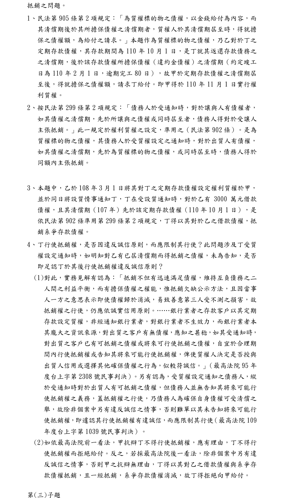
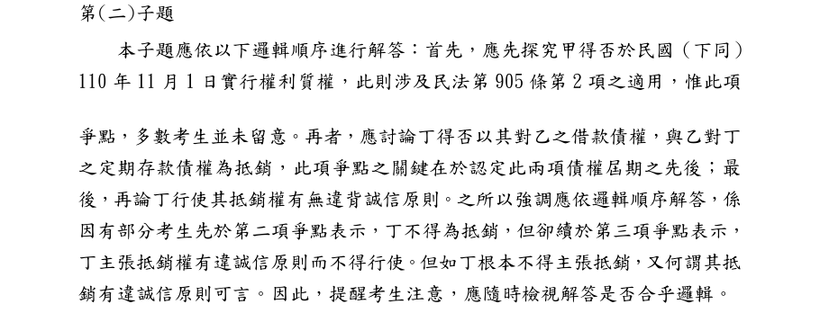

銀行明知卻沒說，還能抵銷嗎？
113年律師第二試｜民法與民事訴訟法（一）｜第二題第（二）小題（30分）
題目
這一題有三個小題。本頁只做第（二）小題，用得到的事實畫黃色底線。
又，B工程施作期間中，丙於112年7月1日將其未來得向甲請求之B工程款（下稱B工程款）讓與戊公司以抵償債務。同年10月間，丙因財務周轉不靈，無力支付分包商庚公司承攬報酬，丙乃徵得甲之同意，將B工程款讓與庚。同年11月1日，戊將受讓B工程款債權一事通知甲，甲自同年12月起，陸續將原應給付丙之B工程款悉數向庚給付。試問：
- （一）若甲以A工程尾款扣抵逾期違約金後，乙以甲按日以契約總價千分之一計罰違約金，顯然過高，應予酌減為由，起訴請求甲返還經酌減部分之數額。甲則抗辯：系爭違約金債務業經以尾款扣抵而履行完畢，法院不得再為酌減。甲之抗辯有無理由？（15分）（本題講義）
- （二）若甲因A工程尾款不足扣抵逾期違約金，乃於110年11月1日實行權利質權，請求丁給付系爭存款，丁以其對乙之3000萬元借款債權，與系爭存款債權主張抵銷。甲抗辯：其係行使權利質權，丁不得主張抵銷，況丁受質權設定通知時，明知對乙有可抵銷之債權，卻未告知其將來可能行使抵銷權，亦違反誠信原則。甲之抗辯有無理由？（30分）本頁只做這一題
- （三）戊主張自己才是B工程款債權之真正債權人，而請求甲給付，有無理由？（30分）
影片說明
影片依序示範：主播介紹、整題讀一遍並逐句畫出事實、三角關係圖、學弟學姊說明三步順序、第905條第2項、時間軸、丁的兩個身分與第299條第2項、長條相抵、兩則最高法院判決、兩說比較、三個易錯點，最後把擬答從頭看一遍。
關係圖：三個人、三筆債
丁銀行同時有兩個身分：存款這筆它是債務人，借款這筆它是債權人。讀條文時要先分清楚說的是哪一筆。
| 債權 | 誰欠誰 | 在本題的角色 |
|---|---|---|
| 違約金1600萬元（扣尾款後仍有未受償） | 乙欠甲 | 質權所擔保的債權 |
| 定期存款2000萬元（110年10月1日到期） | 丁欠乙 | 質權標的物；丁是債務人 |
| 借款3000萬元（107年間到期） | 乙欠丁 | 丁拿來抵銷的債權；丁是債權人 |
答題順序：三步，不能亂
閱卷委員特別要求依這個順序寫。丁如果根本不能抵銷，就沒有「抵銷違反誠信」的問題；先說不能抵銷，又說抵銷違反誠信，前後矛盾。
本題用到的條文
先看核心條文。原文中畫底線的部分，就是本題用到的那一句。
民法第905條第2項：債權質權的實行（第①步）
為質權標的物之債權，以金錢給付為內容，而其清償期先於其所擔保債權之清償期者，質權人得請求債務人提存之，並對提存物行使其質權。為質權標的物之債權，以金錢給付為內容，而其清償期後於其所擔保債權之清償期者，質權人於其清償期屆至時，得就擔保之債權額，為給付之請求。
白話押給你的那筆錢債權（存款）如果比你要收的錢（違約金）晚到期，你就等它到期，再直接找欠錢的人（丁）收，最多收到你被欠的數額。要等，是因為存款到期前，丁還不用付錢。
對照第1項是相反情形：存款比違約金早到期，這時違約金還沒到期，甲只能請丁把錢提存起來。
本題存款110年10月1日到期，晚於違約金；甲在110年11月1日可以向丁請求，範圍是扣尾款後還沒收到的違約金。
民法第902條：權利質權的設定
權利質權之設定，除依本節規定外，並應依關於其權利讓與之規定為之。
白話把債權拿去設質，方法要照「債權讓與」的規定來做，例如要通知債務人。
注意條文本身沒有「準用」兩個字。第299條第2項適用在權利質權，是最高法院的見解（95台上2308：「此項規定，依民法第九百零二條規定於權利質權之設定準用之」），考選部評分要點也這樣寫。
民法第299條第2項：債務人的抵銷（第②步）
債務人於受通知時，所得對抗讓與人之事由，皆得以之對抗受讓人。債務人於受通知時，對於讓與人有債權者，如其債權之清償期，先於所讓與之債權或同時屆至者，債務人得對於受讓人主張抵銷。
白話欠錢的人（丁）收到通知時，如果原本的債權人（乙）也欠他錢，而且比較早到期或同時到期，丁就可以拿這筆錢跟被讓出去的債權抵銷；換成新的人（甲）來要錢，丁照樣可以抵。
為什麼要比較早到期如果丁的借款比存款晚到期，存款到期時丁就得先付存款，那時還沒有東西可以抵，丁本來就沒有「可以抵」的期待。
本題債務人＝丁、讓與人＝乙（出質人）、受讓人＝甲（質權人）。108年3月1日通知時，丁對乙有3000萬元借款，107年就到期，早於存款的110年10月1日。
民法第334條第1項：抵銷的要件
二人互負債務，而其給付種類相同，並均屆清償期者，各得以其債務，與他方之債務，互為抵銷。但依債之性質不能抵銷或依當事人之特約不得抵銷者，不在此限。
白話兩個人互相欠錢，欠的東西種類一樣，而且都到期了，就可以互相扣掉。
例子你欠室友房租5,000元，室友欠你代墊的電費3,000元，都到期了，你只要再給2,000元。
民法第148條第2項：誠信原則（第③步）
權利之行使，不得違反公共利益，或以損害他人為主要目的。行使權利，履行義務，應依誠實及信用方法。
白話就算有權利，也要用誠實、守信的方式行使。
本題丁有抵銷權，但沒告知甲就行使，算不算違反誠信？這就是兩則最高法院判決看法不同的地方。
其他用到的條文（點開）
民法第335條第1項：抵銷的方法與效果
抵銷，應以意思表示，向他方為之。其相互間債之關係，溯及最初得為抵銷時，按照抵銷數額而消滅。
白話說一聲「我要抵銷」就生效，兩筆債在抵銷數額內消滅，而且回溯到最早可以抵銷的時候。本題存款2000萬元全部消滅，借款剩1000萬元。
以上條文均依全國法規資料庫現行條文核對（2026-11-17）。
第②步逐項對照：丁能不能抵銷？
| 第299條第2項的要件 | 本題事實 | 結果 |
|---|---|---|
| 債務人受通知時 | 108年3月1日設質並通知丁 | 以這天為準 |
| 對讓與人（出質人）有債權 | 丁對乙有3000萬元借款 | ✓ 有 |
| 清償期先於或同時於被設質的債權 | 借款107年間到期；存款110年10月1日到期 | ✓ 較早 |
| 可以抵銷（第334條） | 都是金錢之債，互負債務，均已到期 | ✓ 2000萬元範圍內 |
甲說「我是行使質權，所以丁不能抵銷」，並無理由：第299條第2項保護的正是這種情形，丁可以對甲主張抵銷。
第③步：兩則最高法院判決的看法
| 比較 | 肯定說（違反誠信） | 否定說（不違反誠信） |
|---|---|---|
| 判決 | 95台上2308 | 109台上1039 |
| 看什麼 | 抵銷沒有公示方法；銀行有資訊優勢，受通知時已有可抵銷債權，宜在合理期間內行使或告知 | 要說違反誠信，權利人須有外觀行為，讓對方正當信賴他不會再行使權利 |
| 本題結果 | 甲之抗辯有理由 | 甲之抗辯無理由，丁得抵銷（本文採） |
本文採否定說的理由：受通知時已存在的抵銷權，是第299條第2項明定的效果；只因沒告知就限制抵銷，等於多加一個法律沒有的告知義務。丁只是沒講，沒有讓甲相信它放棄抵銷的外觀行為，題目也沒有其他違反誠信的事實。
評分要點兩說並列；依任一說論述完整、前後一致，都可得分。
答題地圖
標號層次：一、→（一）→1.。第一行直接寫結論。
考選部評分要點與閱卷委員的話
| 評分要點 | 內容 |
|---|---|
| 1. 第905條第2項 | 存款清償期110年10月1日，後於違約金債權之清償期（約定竣工日110年2月1日，逾期完工80日），甲得於110年11月1日實行權利質權。 |
| 2. 第299條第2項 | 此一規定於權利質權之設定準用之（第902條）；債務人受設質通知時對出質人有債權，清償期先於或同時屆至者，得於同額內主張抵銷。 |
| 3. 涵攝 | 丁受通知時有3000萬元借款債權，清償期（107年）先於存款（110年10月1日），丁得抵銷。 |
| 4. 誠信原則 | 95台上2308與109台上1039兩種看法；依前說甲之抗辯有理由，依後說除個案另有違反誠信情事外，甲之抗辯無理由，丁得抵銷並拒絕給付。 |

閱卷委員的話：
- 應依邏輯順序作答：先論甲得否於110年11月1日實行權利質權（第905條第2項），多數考生並未留意。
- 再論丁得否以借款債權抵銷，關鍵在兩項債權屆期的先後。
- 最後才論抵銷有無違反誠信。有考生先說丁不得抵銷，又說丁的抵銷違反誠信，前後矛盾。

來源：考選部〈113年司法官、律師考試第二試法律專業科目評分要點與閱卷委員的話〉民法與民事訴訟法（一）第7、8、10、11頁，已轉成圖片逐頁核對。
擬答
甲之抗辯無理由，丁得以借款債權抵銷，拒絕給付。
一、甲得實行權利質權
質權標的物之金錢債權，清償期後於所擔保債權者，質權人於其屆期時，得就擔保債權額請求給付（民法第905條第2項）。乙逾期80日完工，違約金債權已屆期；存款債權110年10月1日始到期，甲得於110年11月1日，就尾款扣抵後未受償之違約金，請求丁給付。
二、丁得主張抵銷
（一）依第902條準用第299條第2項，債務人受設質通知時，對出質人有債權，其清償期先於為質權標的物之債權或同時屆至者，得於同額內主張抵銷（95台上2308）。
（二）丁受設質通知時，對乙已有3000萬元借款債權，且於107年間屆期，先於存款債權之110年10月1日，二者均為金錢之債，得於2000萬元範圍內抵銷（第334條第1項）。甲稱行使質權即排除抵銷，並無理由。
三、丁之抵銷是否違反誠信原則（第148條第2項）
（一）肯定說：抵銷欠缺公示方法，易致善意第三人受損害；銀行受設質通知時已有可抵銷之債權，宜於合理期間內行使或告知將來可能抵銷，始符誠信（95台上2308）。依此，甲之抗辯有理由。
（二）否定說：須權利人有外觀行為，足使相對人正當信賴其不欲行使權利，始違誠信；未記載不拋棄抵銷權，難認已拋棄，財政部函僅屬行政指導（109台上1039）。
（三）本文採否定說。受通知時已存在之抵銷權，係第299條第2項明定之效果；單純未告知即限制抵銷，無異增加法律所無之告知義務。丁僅未告知，並無使甲信賴其拋棄抵銷權之外觀行為，題示亦未見其他足認違反誠信之情事。
四、結論
丁之抵銷有效，存款債權於同額內消滅（第335條第1項），甲之質權失所附麗，甲之抗辯無理由。
擬答690字（含標題、標點與數字，不含空白，以程式計算）。
字數上限：為什麼是693字
| 項目 | 數字 |
|---|---|
| 本小題可用時間 | 120分鐘 × 30/150 ＝ 24分鐘 |
| 讀題 | 約3分鐘，實際作答約21分鐘 |
| 打字速度 | 一般人中文打字約每分鐘33字（粗估） |
| 上限 | 21分鐘 × 每分鐘約33字 ＝ 693字 |
互動：換一個日期，丁還能對甲抵銷嗎？
第299條第2項看的是「受通知時有沒有債權」和「誰先到期」。改一個事實，結果就不同。先自己想想，再點。
後兩個分頁是本頁為了對照第299條第2項要件所做的假設與推論，不是考選部評分要點的內容。本頁推論
實務見解
最高法院95年度台上字第2308號民事判決（95年10月19日，廢棄發回）
……此項規定，依民法第九百零二條規定於權利質權之設定準用之。……惟抵銷欠缺公示方法，且因當事人一方之意思表示即使債權歸於消滅，易致善意第三人受不測之損害，故抵銷權之行使，仍應依誠實信用原則。……銀行業者……如其受通知時，對出質之客戶已有可抵銷之債權或將來可行使抵銷之債權，自宜於合理期間內行使抵銷權或告知其將來可能行使抵銷權，……似較符誠信。
用語是「自宜」「似較符誠信」，語氣保留。發回後，臺灣高等法院95年度重上更（一）字第191號判決駁回質權人之訴（認抵銷有效），最高法院96年度台上字第1583號裁定以上訴不合法駁回。
最高法院109年度台上字第1039號民事判決（109年5月27日，廢棄發回）
……該所謂「禁反言原則」之適用，須權利人有外觀之行為，足使相對人正當信賴其已不欲行使其權利，始足當之。……於系爭質權設定覆函內，並無拋棄抵銷權之記載……，似難認其已為拋棄抵銷權之意思表示。……至財政部函文所載……與民法有關抵銷權行使之規定不符，似僅屬對銀行提出建議性質之行政指導，不具強制性……
發回後，臺灣高等法院109年度上更一字第111號判決駁回質權人之訴（認抵銷有效），最高法院110年度台上字第1695號裁定駁回上訴。
兩判決均在司法院裁判書系統開全文並核對右側歷審（2026-11-16、2026-11-17）；原文載有當事人名稱，本頁只用身分稱呼。
學說補充
尚未加入指定學說文獻。本頁依已核對的官方評分要點與上列判決整理，不另增列未查證的學說立場。
預想易錯點
以下是依閱卷委員的話與判決查證整理的易錯方向，還不是學生實際作答的統計。
| 可能的錯誤 | 應該怎麼寫 |
|---|---|
| 漏掉第905條第2項，沒說甲什麼時候能實行質權 | 先寫第①步：存款晚到期，甲在110年11月1日得請求丁給付（閱卷委員點名多數考生未留意）。 |
| 先說丁不能抵銷，又討論抵銷違反誠信 | 依序寫三步；丁若不能抵銷，就沒有違反誠信的問題（閱卷委員點名）。 |
| 沒比較兩筆債權的到期先後 | 第②步的關鍵是借款（107年）早於存款（110年10月1日）。 |
| 把兩件發回判決寫成最高法院已判定輸贏 | 寫「最高法院認為」並標字號，不寫「最高法院判決銀行敗訴／勝訴」。 |
| 說「第902條規定準用第299條第2項」 | 第902條沒有「準用」二字；寫「依第902條準用第299條第2項（95台上2308）」，標出實務出處。 |
延伸思考
參考資料
歡迎指正
相關連結
民法講義總覽 同一題第（一）小題：違約金扣抵與酌減 第一題第（一）小題：詐害債權撤銷 第一題第（二）小題：附負擔贈與撤銷 第一題第（三）小題：袋地通行權與權利瑕疵 GitHub 原始檔